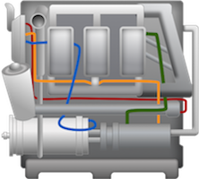

Docs
Everything You Need to Know
Promises
API
Promise
Promise()
This method is used to create a new promise:
var myPromise = new Promise();
Promise.then
Promise.then(callback)
This method is used to handle the return of a promise. Promises are async. Using then allows you to handle the result of a promise when it is ready. The result of the promise being resolved is return as the argument for the callback in then().
var myPromise = new Promise();
myPromise.then(function(result) {
console.log(result);
});
Promise.catch
Promise.catch(callback)
This method is used for error handling. Its callback gets the error passed to it. Catch is not finall. You could attach a then to it. In that case the then would be execute after the error was handled.
var myPromise = new Promise();
myPromise.then(function(result) {
console.log(result);
})
.catch(function(err) {
console.log(err);
});
Promise.all
Promise.all()
This method allows you to execute a callback after an array of promises are resolved. This is convenient where you have multiple async operations, say requests for remote data, and you want to wait for all of them to complete before doing anything.
var myPromise1 = new Promise();
var myPromise2 = new Promise();
var myPromise3 = new Promise();
Promise.all([myPromise1, myPromise2, myPromise3])
.then(function(result) {
console.log(result);
});
myPromise1(1);
myPromise2(2);
myPromise3(3);
Promise.race
Promise.race()
This method allows you to do something with the first of several promises is resovled.
var f1, f2, f3;
var p1 = new Promise(function(f, r) { f1 = f; });
var p2 = new Promise(function(f, r) { f2 = f; });
var p3 = new Promise(function(f, r) { f3 = f; });
Promise.race([p1, p2, p3]).then(function(value) {
console.log('Promise.race() should resolve to: ' + value);
});
// Execute the second:
f2(2);
Promise.resolve
Promise.resolve()
This method is used to resolve a promise. When it is resolved, any thens chained to it will receive its result.
var fulfill;
new Promise(function (resolve, reject) {
fulfill = resolve;
}).then(function(value) {
equal(value, 5, 'Promise fulfilled with Promise should resolve to actual value');
start();
});
fulfill(Promise.resolve(5));
Promise.reject
Promise.reject()
This method is used to reject a promise. When a promise is rejected any error handlers will capture the error.
var fulfill;
new Promise(function (resolve, reject) {
fulfill = resolve;
// Handle the error:
}).catch(function(value) {
console.log(value);
});
fulfill(Promise.reject(5));